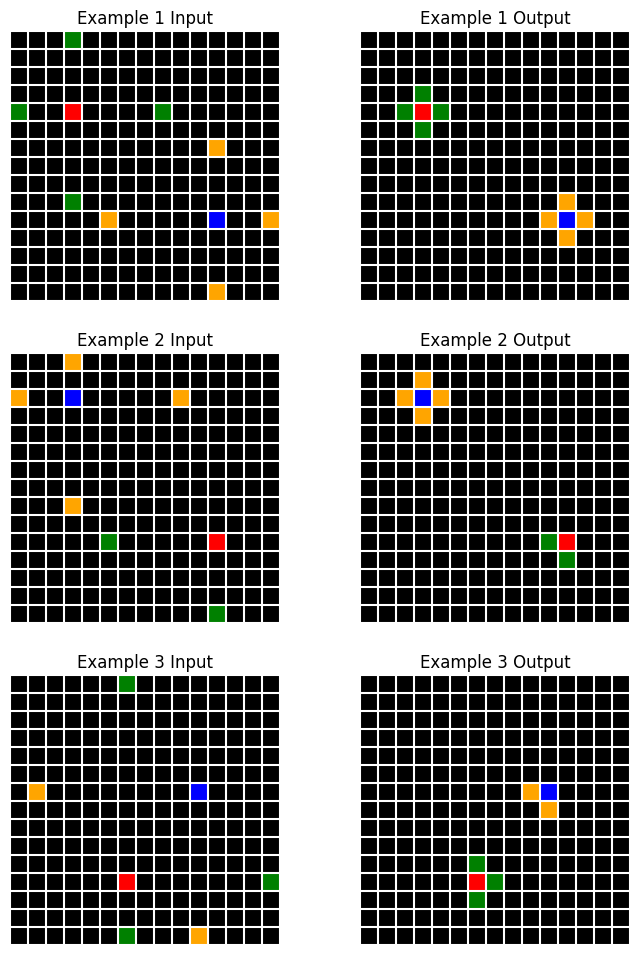
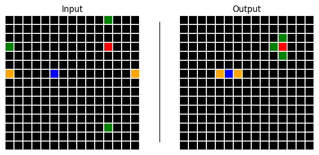

chat = _create_chat(model, _create_client('bedrock', {}), sp=sp_solve)
for e in examples:
chat.h.append(e.description)
chat.h.append((f"<reasoning>\n{e.reasoning}\n</reasoning>\n\n<new_primitives>\n{e.new_primitives}\n"
f"</new_primitives>\n\n<input_model>\n{e.input_model}\n</input_model>\n\n"
f"<output_model>\n{e.output_model}\n</output_model>"))
r = await chat(
ds[0].d,
prefill="<reasoning>", temp=0.6, stop='</output_model>'
)
if r.stop_reason == 'stop_sequence': r.content[0].text += '</output_model>'solve
Use Claude to solve a given ARC task
This module implements a solver agent that generates, validates and tests candidate solutions to a given task, then iteratively attempts to refine its solutions based on execution and prediction error feedback. The solver carries out the following process:
- Analyse the task and generate
ndescriptions concurrently (using the direct or indirect method or a combination) - Based on these, generate
ncandidate solutions concurrently using the OCM framework- During generation, solutions are automatically parsed and validated for syntax errors
- In isolated python subprocesses, run all solutions against the task data in parallel, constructing output grid predictions
- Calculate scores for all solutions based on cell-wise accuracy
- If any solutions correctly predict all train examples:
- Validate against the test example and return if successful
- Else:
- Construct a feedback prompt for Claude, including any execution errors and an image of the true vs predicted grids
- Repeat up to a max number of attempts
Solution
Solution (reasoning:str, new_primitives:str, input_model:str, output_model:str)
Code components of a single ARC solution attempt.
We use a system prompt that instructs Claude to respond with chain of thought reasoning, followed by its solution code, formatted using xml tags: Solution dataclass automatically parses the xml response and stores the various components.
This class will throw an exception if the xml parsing fails. We can also parse the generated code to check for syntax errors.
Before running the code, we can use ast to validate that it contains the correct model names, class methods etc. and doesn’t raise syntax errors.
CodeValidator
CodeValidator ()
Validates that ARC solution code has required classes and methods
Let’s test it out. To encourage the correct code format, we’ll insert a few examples into the chat history.
sol = Solution.from_response(r.content[0].text)
CodeValidator.validate(sol.full_code)
print(sol.input_model)class InputModel(Grid):
"""
Model for input grid containing scattered colored pixels.
"""
pixel_positions: Dict[int, List[Vector]] = Field(default_factory=dict)
@classmethod
def from_array(cls, arr: np.ndarray) -> 'InputModel':
positions = {}
objects = []
# Extract positions of each colored pixel
for i in range(arr.shape[0]):
for j in range(arr.shape[1]):
if arr[i,j] > 0:
color = arr[i,j]
if color not in positions:
positions[color] = []
pos = Vector(i=i, j=j)
positions[color].append(pos)
objects.append(Rectangle(
position=pos,
size=Vector(i=1, j=1),
color=Color(color)
))
return cls(
size=Vector(*arr.shape),
background_color=Color(0),
pixel_positions=positions,
objects=objects
)In fact, we can run this parsing and validating automatically and trigger retries if either fails. Let’s patch a new chat method for this
AsyncChat.codeloop
AsyncChat.codeloop (pr:str, max_attempts:int=3, prefill:str='<reasoning>', stop:str='</output_model>', trace_func:Optional[<built-infunctioncallable>]=None, temp=0, maxtok=4096, stream=False)
Generate and validate solution code from Claude, automatically retrying on validation errors
| Type | Default | Details | |
|---|---|---|---|
| pr | str | Initial prompt to pass to Claude | |
| max_attempts | int | 3 | Maximum number of retry attempts |
| prefill | str | Text to prefill assistant’s response with | |
| stop | str | Stop sequence for generation | |
| trace_func | Optional | None | Function to trace attempts (e.g. print) |
| temp | int | 0 | Temperature |
| maxtok | int | 4096 | Maximum tokens |
| stream | bool | False | Stream response? |
| Returns | Solution | Validated solution attempt from Claude’s response |
Attempt
Attempt (task:arcsolver.task.ArcTask, description:arcsolver.describe.Description, depth:int, solution:Optional[__main__.Solution]=None, chat:Optional[claudette.asink.AsyncChat]=None, parent:Optional[ForwardRef('Attempt')]=None, children:List[ForwardRef('Attempt')]=<factory>, result:Optional[__main__.ExecutionResult]=None, error:Optional[str]=None)
An attempt at solving an ARC task.
The Attempt class stores everything relating to a single attempt. The solver will create a tree structure of attempts, with the root node being a description. Each subsequent attempt has a parent and a list of children, where a child is formed when we retry an attempt using execution/prediction error feedback.
Next, we need to run the generated code and make predictions on the training examples. Let’s define a container for a code execution result
ExecutionResult
ExecutionResult (in_preds:Optional[List[arcsolver.task.ArcGrid]]=None, out_preds:Optional[List[arcsolver.task.ArcGrid]]=None, error:Optional[str]=None, example_errors:Optional[List[str]]=None)
Contains all results from a solution attempt execution
To generate an ExecutionResult, we’ll run an Attempt’s code in a separate python process.
SandboxedExecutor
SandboxedExecutor ()
Executes ARC solutions in a separate Python process with detailed results
Warning
Note that we are executing code generated by AI models. While designed for research and experimentation, it includes basic safety measures:
- Code is pre-validated to check for specifically requested class names and methods.
- Code execution occurs in isolated subprocesses
- Each execution has a 5-second timeout limit
- Exceptions are caught and handled safely
Users should exercise appropriate caution and avoid running unknown solutions in security-critical environments.
We can use ProcessPoolExecutor to run all attempts in parallel
ConcurrentExecutor
ConcurrentExecutor (max_workers:Optional[int]=None)
Executes multiple ARC solution attempts concurrently
If an attempt is unsuccessful, we can write a function to generate a prompt for Claude to try again. We’ll parse a result and feed back which predictions were correct, if any and what error messages were encountered, if any.
feedback
feedback (attempt:__main__.Attempt)
Generate feedback message for Claude based on execution results
| Type | Details | |
|---|---|---|
| attempt | Attempt | Incorrect attempt |
| Returns | list | feedback prompt for claudette, maybe including an image of an incorrect prediction |
fb = feedback(attempts[0])
print(fb[0] if len(fb) == 1 else fb[-1])Well done, your input grid model was able to correctly reconstruct all input arrays.
Unfortunately, your output model made incorrect predictions for examples 1, 2, 3.
Attached is an image of the true output grid (left) and your model's prediction (right) for example 3.
Please try again, responding in the same style as before. Use <reasoning> tags to explain your thought process for addressing these issues, then proceed with <new_primitives>, <input_model> and <output_model>.
IMPORTANT: Remember the core principles! Do not implement example-specific logic or rules based on this image.ArcSolver
ArcSolver (model:str='claude-3-5-sonnet-20241022', client_type:str='anthropic', client_kwargs:Optional[Dict]=None, describer:Optional[arcsolve r.describe.DescriptionGenerator]=None, solve_sp:Optional[str]=None, max_workers:Optional[int]=None, top_n:int=2, logger:Optional[logging.Logger]=None)
(Attempt to) Solve an ARC task using Claude.
| Type | Default | Details | |
|---|---|---|---|
| model | str | claude-3-5-sonnet-20241022 | Model identifier (defaults to Sonnet 3.5) |
| client_type | str | anthropic | ‘anthropic’, ‘bedrock’, or ‘vertex’ |
| client_kwargs | Optional | None | Optional kwargs for client instantiation |
| describer | Optional | None | Optional custom description generator |
| solve_sp | Optional | None | Custom system prompt for solution generation |
| max_workers | Optional | None | Max concurrent processes for execution |
| top_n | int | 2 | Number of best attempts to retry from |
| logger | Optional | None | Optional pre-configured logger |
ArcSolver.solve
ArcSolver.solve (task:arcsolver.task.ArcTask|str, d_direct:int=1, d_indirect:int=1, budget:int=30, temp:float=0.7, **kwargs)
Generate and iteratively refine solutions until success or budget exhausted.
| Type | Default | Details | |
|---|---|---|---|
| task | arcsolver.task.ArcTask | str | ARC task or task ID to solve | |
| d_direct | int | 1 | Number of direct descriptions to generate |
| d_indirect | int | 1 | Number of indirect descriptions to generate |
| budget | int | 30 | Maximum number of solution attempts |
| temp | float | 0.7 | Temperature for generation |
| kwargs | |||
| Returns | List | Successful solutions found, if any |
Let’s try it out on an example task
t = random.choice(train_tasks)
task = ArcTask(t)
print(f"Task: {t}\n")
task.plot()Task: ae3edfdc

solver = ArcSolver(model, 'bedrock', top_n=5)
solutions = await solver.solve(task, d_direct=14, d_indirect=1, budget=50)
Solving task: ae3edfdc
Generating descriptions... | Attempts: 0/50 | Best Score: 0.000 | Cost: $0.000
Starting solution attempts... | Attempts: 0/50 | Best Score: 0.000 | Cost: $0.374
Generating initial solutions... | Attempts: 0/50 | Best Score: 0.000 | Cost: $0.374
Testing solutions... | Attempts: 0/50 | Best Score: 0.000 | Cost: $1.145
Continuing refinement... | Attempts: 15/50 | Best Score: 0.999 | Cost: $1.145
Refining previous solutions... | Attempts: 15/50 | Best Score: 0.999 | Cost: $1.145
Testing solutions... | Attempts: 15/50 | Best Score: 0.999 | Cost: $1.436
Found potential solution, validating... | Attempts: 15/50 | Best Score: 1.000 | Cost: $1.436
Solution found! | Attempts: 20/50 | Best Score: 1.000 | Cost: $1.436
Solution found! 🎉 | Attempts: 20/50 | Best Score: 1.000 | Cost: $1.436Nice, let’s have a look at the test prediction
executor = SandboxedExecutor()
test_pred = executor.run(solutions[0].solution, task, split='test')
ArcPair(test_pred.in_preds[0], test_pred.out_preds[0]).plot()
And let’s inspect the description that led to a successful solution:
print(solutions[0].description.d)The input grids contain scattered colored pixels where red and blue pixels serve as attraction points for other colors. Green pixels are attracted to and move adjacent to red pixels, while orange pixels are attracted to and move adjacent to blue pixels. The positions of red and blue pixels remain fixed, while green and orange pixels move to become orthogonally adjacent to their respective attractors, forming clusters in the output grid. The background black color and grid dimensions remain unchanged throughout the transformation.
Pretty good!